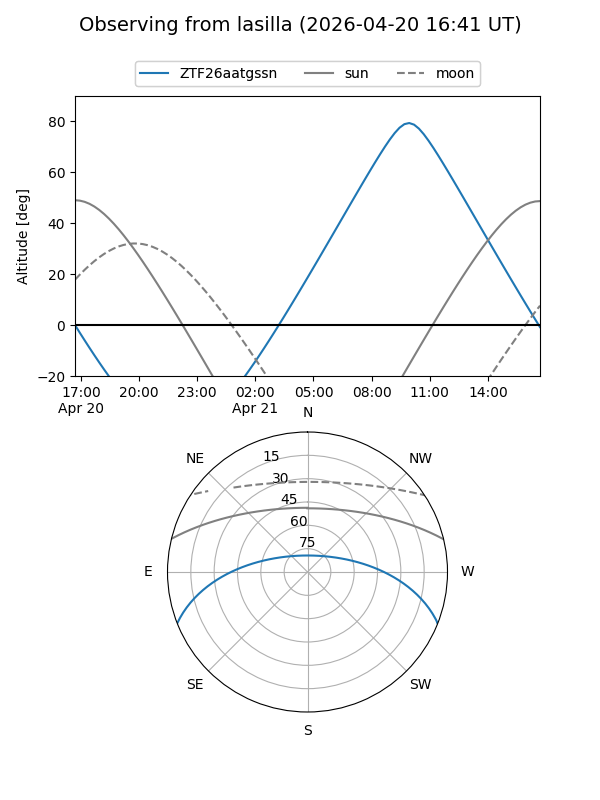
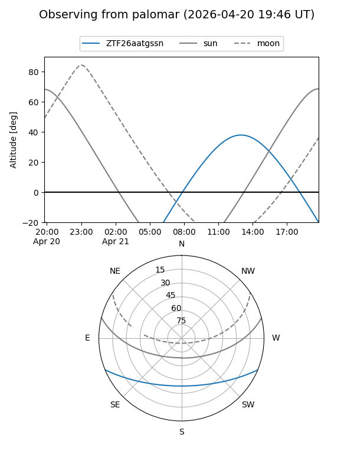

ZTF26aatgssn
Target ZTF26aatgssn at 2026-04-20 20:42
Aliases and brokers:
FINK: link
Lasair: link
ALeRCE: link
alt names
ZTF26aatgssn (ztf,fink_ztf)
Coordinates:
equatorial (ra, dec) = 287.1771,-18.68468
equatorial (HMS+DMS) = 19:08:42.51,-18:41:04.86
galactic (l, b) = (17.9608,-12.09605)
Flags:
Photometry:
last ztfg=19.42, ztfr=19.09
1 ztfg, 1 ztfr detections
Lightcurve
Visibility


Additional plots